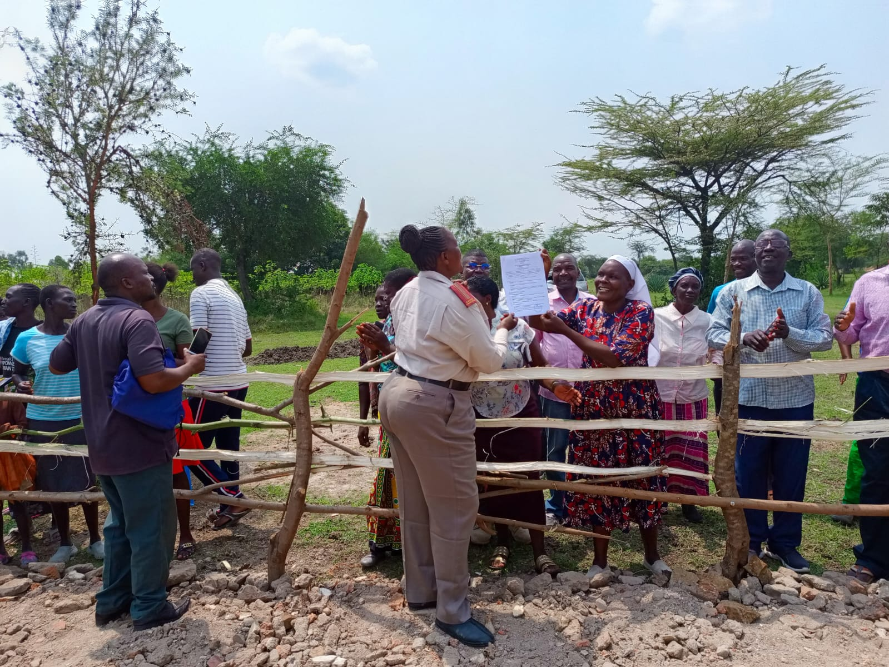

Why Clean Water Matters
Access to clean water is essential for health, dignity, and sustainable development.

Our Mission
We educate communities about clean water, conservation, and protecting wells and boreholes for future generations.
The Impact of Unsafe Water
- Causes preventable diseases and health complications
- Affects children’s education due to illness
- Increases healthcare costs for families
- Limits economic growth and productivity
According to global health organizations, access to clean water significantly reduces disease outbreaks and improves overall quality of life.
Simple Ways to Protect Water Sources
- Boil or treat drinking water before use
- Protect wells and boreholes from contamination
- Avoid dumping waste near rivers and streams
- Practice water conservation at home
- Educate others about clean water safety